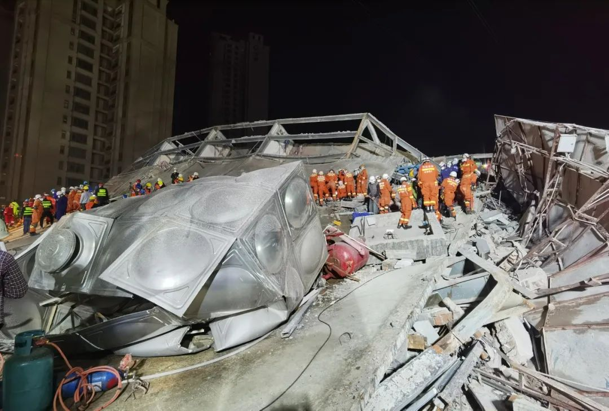
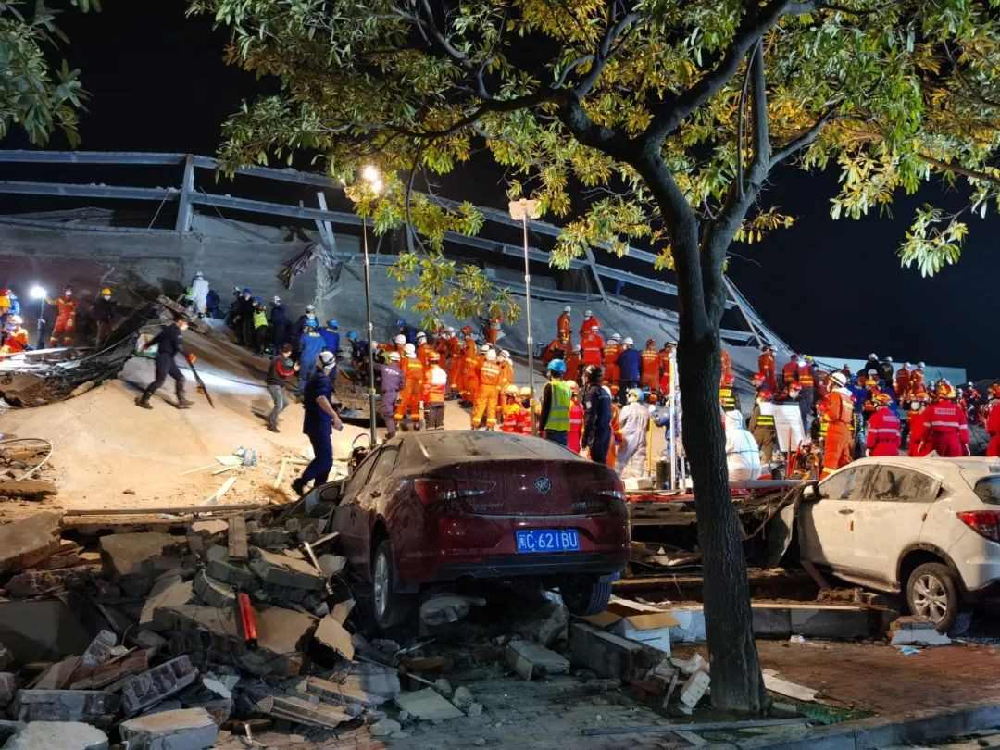

泉州欣佳酒店整栋坍塌，装修期间就曾引发承重担忧
原文链接 备份链接 酒店在装修期间，就曾引发同楼商户对承重能力的担忧。“在酒店装修的那两三个月，因为压力问题，我们一楼商户的门窗玻璃被挤压炸裂五六块，后来觉得房子太危险，我就搬走了。” 记者 | 吴 雪 3月7日，随着莆田、漳州两市11名 …

该酒店之前被改造为泉州鲤城区的医学观察点，用以隔离观察密切接触者，事发时被困人数约70人。参与救援的人士表示，现场情况“惨烈”。知情人称，酒店所在建筑曾进行大规模改造
文 |《财经》记者 俞琴 白兆东 鲁伟
编辑 | 鲁伟
3月7日19时许，福建省泉州市鲤城区欣佳酒店发生坍塌事故，该酒店为新冠肺炎疫情隔离点。欣佳酒店发生楼体坍塌时被困人员约70人。据人民日报消息，3月8日8时16分，厦门市消防救援支队救出一名被困男子，他的妻子和孩子还被压在堆积物中，至此，现场已救出48人。
另据泉州市政府通报，酒店发生楼体坍塌事故。经过摸排，事发后大楼内受困71人，另有9人自行逃生，截至3月8日6时，现场救出36人。
国务院安委会办公室已派出由副主任付建华带队的工作组赶赴现场，指导协助地方开展救援处置工作。
欣佳酒店系省外疫情重点地区来鲤人员集中医学观察点。一份文件截图显示，欣佳酒店所在的社区居委会曾发出通知，自2月18日以后，来自湖北（武汉）、温州市乐清市、泰顺县鹿城区、龙湾区、瓯海区、瑞安市、永嘉县等地返回鲤城区人员将实行集中隔离，而隔离点正是欣佳酒店。
官方通报显示，事故发生后，国家有关部委通过视频连线、派出工作组等指导救援；福建省、泉州市、鲤城区立即组织现场搜救和医疗救治工作。泉州市启动应急预案，成立应急救援工作领导小组，由市委书记康涛、市长王永礼任组长，领导小组下设救援、医疗、善后、事故调查等工作组。
事发当晚，省、市、区三级出动吊车、起重机、挖掘机等应急救援车辆43部、消防车辆126部、救护车20部，消防、医务及其他救援人员1000余名。
截至发稿时，现场施救仍在进行，事故原因正在调查。
“领导在现场，我其实现在不知道怎么回答你。”3月7日晚22点20分，一名泉州市应急管理局的工作人员告诉《财经》记者，他目前正在单位，不清楚现场情况，此时他正打算去机场，“国务院来人了，还有省里面在派人过来，我们现在派车去机场接他们。”
据目击者称，欣佳酒店几乎是整体性坍塌，现场一片狼藉，有围观群众称“里面还有很多人被压住”。
一位参与现场救援的人士告诉《财经》记者，3月7日晚9点半左右，救援队抵达事故现场。此时官方已经对附近几个路口进行封锁，只准救援车辆进入，事故现场附近停了70多辆消防车，官方、民间的救援力量正在开展工作。
上述人士表示，现场情况“惨烈”，多具遗体被大梁压住，有些靠酒店停放的汽车，车头被砸掉。他描述称：房屋前墙往后倾，后墙往前倾，呈“人字形”——这看起来不同寻常，“一定是某几个承重的地方没达到要求，才造成这种受力结果。”
这位人士推测，很可能是大楼的框架结构受到了破坏，这点在后期作业中找到印证，他发现有遇难者被大梁压住，“出现的遗体被大梁压住，那证明大梁有断裂或者严重挤压，要不这样的钢质框架结构被大梁压倒比较少见。”
另一方面，该人士在现场注意到，顶楼天花板是混凝土结构，厚15厘米左右。他表示，对于这栋建筑来说，如果每一层楼的天花板都这么厚，底下是受不了这么重的压力的。
尽管有搜救犬和生命探测仪，但由于现场人员较多，生命探测仪难以开展工作，而对于搜救犬，工作的空间十分有限，“搜救犬进去四次，两次找到人。” 上述参与现场救援的人士预测，事发当晚10点半、甚至11点半前救出来的人，生存概率会比较大，“后面没出来，凶多吉少。”
公开信息显示，欣佳酒店于2018年6月开业，酒店内拥有多种类型客房共计80间。欣佳酒店注册时间为2018年3月28日，经营者为杨金锵，登记地址为泉州市鲤城区常泰街道上村社区南环路1688号，该楼四至六层为客房。
通过公开资料检索，注册地址与欣佳酒店相同的还有另外多家企业，其中包括泉州好车汇汽车贸易有限公司（下称好车汇公司）、泉州全德宝汽车销售有限公司（下称全德宝公司）、泉州华宝汽车销售服务有限公司（下称华宝公司）、福建省顶鑫再生资源回收有限责任公司、鲤城区小灰餐饮店、鲤城区林进权餐饮店、鲤城区琴悦足浴中心、鲤城区沈增华便利店等。
3月7日，有知情人告诉《财经》记者，“房主将一楼出租给了一家汽车4S店”，该楼除了酒店外，还有汽车销售和足浴等其他营业项目。事发时，“这栋楼房正处于装修改造期间”。另有消息称，楼内一家4S店在装修中可能损坏了室内支撑柱，从而导致坍塌事故发生。具体原因究竟如何，尚待权威机构调查确认。
发稿前，《财经》记者多次联系上述与欣佳酒店相同注册地址的企业求证，但多数未接听电话。
一位全德宝公司人士接受《财经》记者采访时介绍，发生事故的是一栋钢结构建筑，2013年该楼建成以后，全德宝公司与华宝公司是最早一批招商进入该建筑的企业。他介绍，原本这栋建筑总共七层，只有一楼、六楼、七楼有天花板，二楼直接到六楼，中间没有楼层，“都是空旷的”，七楼是员工宿舍。2017年左右，大楼开始建造酒店，二楼至六楼之间，“一层一层开始造”。施工过程中，全德宝汽车公司办公室的玻璃曾“爆了五六块”。 “每一层都要加钢筋水泥的话，那样就会太重了。”上述人士表示， 受楼上酒店装修影响，2017年底，全德宝公司从该建筑搬走。全德宝公司搬走之后，一部分改成了欣佳酒店大堂，另一部分空间入驻好车汇公司等其他企业。3月7日，这位人士得知酒店坍塌后并不感到意外，只不过，“搬走时没想到会这么严重。”
针对欣佳酒店是否为危楼、是否因装修改造导致楼体坍塌等说法，一位泉港市住建局工作人员7日晚向《财经》记者表示，暂时不清楚倒塌的原因。他表示，住建局领导正在现场，“主要是救援，帮忙调动大型机械。”
事发后，《财经》记者多次拨打欣佳酒店经营者杨金锵的电话，但一直无人接听。
工商资料显示，欣佳酒店的企业地址近日发生了变更，由福建省泉州市鲤城区常泰街道上村社区南环路1688号6楼”变更为“福建省泉州市鲤城区常泰街道上村社区南环路1688号地上一层大厅、四至六层”。
尽管欣佳酒店成立时间不久，但至今已被当地有关部门两次行政处罚。两次违法行为类型均为：“未按规定办理住宿登记”。第一次处罚日期是2018年11月16日，第二次处罚日期是2019年12月4日，两次均责令酒店立即整改，并分别对酒店处以警告并处罚款3000元。
据泉州市卫健委3月7日通报，截至3月6日24时，该市累计报告新冠肺炎确诊病例47例，累计追踪到密切接触者1725人，其中解除医学观察1706人、转为疑似或确诊病例10人、尚在医学隔离观察9人。其中发生酒店坍塌事故的鲤城区确诊1例。
更多现场图片：




感谢现场受访者提供视频素材和图片

▲点击图片查看更多疫情报道
责编 | 黄端 duanhuang@caijing.com.cn
本文为《财经》杂志原创文章，未经授权不得转载或建立镜像。如需转载，请在文末留言申请并获取授权。
原文链接 备份链接 酒店在装修期间，就曾引发同楼商户对承重能力的担忧。“在酒店装修的那两三个月，因为压力问题，我们一楼商户的门窗玻璃被挤压炸裂五六块，后来觉得房子太危险，我就搬走了。” 记者 | 吴 雪 3月7日，随着莆田、漳州两市11名 …
原文链接 备份链接 记者/曹慧茹 李佳楠 佟晓宇 李东 实习记者/周缦卿 编辑/ 石爱华 宋建华 泉州一七层建筑整体坍塌 3月7日19时15分，泉州市鲤城区一栋大楼发生整体坍塌事故，事故现场共有71人被困（不含自救逃生的9人）。截至3月8 …
原文链接 备份链接 在围观者拍摄的视频中 有人员被陆续从事故地点背出 消防、警方和医护人员在现场紧急救援。孙虹摄 3月7日晚7点多，泉州市欣佳酒店发生楼体坍塌。该酒店为当地一处新冠肺炎密切接触者隔离观察点。 欣佳酒店位于泉州市鲤城区南 …
原文链接 备份链接 为何将这座屡次被罚 且所在建筑内部仍在装修的酒店 定为疫情隔离观察点？ 3月7日晚，泉州鲤城区欣佳酒店所在的建筑发生楼体坍塌，楼内9人自行逃出，71人被困。截至3月8日16时，已救出48人，其中10人死亡，余下38 …
原文链接 备份链接 记者 | 李秀莉 郜超 实习记者 | 李晓洁 3月7日晚7点左右，泉州市鲤城区南环路欣佳酒店发生楼体坍塌事故，该酒店是鲤城区新冠肺炎医学观察点，逃生9人，受困71人。截至本刊发稿，事故现场已救出48人，其中10人死亡。 …